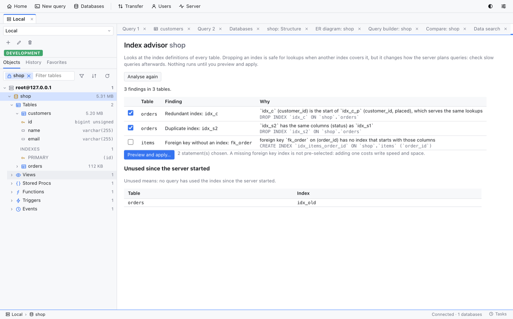

See the whole schema at once
Every table and foreign key of a database, laid out by key depth. Drag tables around, zoom, filter by name, open a table from the diagram, or copy the whole thing as Mermaid for your docs.

MyLoDB opens MySQL, MariaDB and SQLite files on your Mac or Windows PC. It stays quick on tables with millions of rows, and it asks before it does anything you cannot undo.
Download for Apple Silicon Download for Intel Download for Windows
Version 0.9.0. Free and open source under Apache-2.0. It updates itself, and it sends no telemetry.
-- clear out the test orders
This statement can destroy data. Nothing has been sent to the server yet.
DELETE FROM orders;
A working copy of the real dialog. Type the word and see what changes.
Tested in CI against MySQL 8.0, 8.4 and 9, and MariaDB 10.11 and 11.4. Opens and edits SQLite files. Apple Silicon, Intel and Windows (64-bit).
Every table and foreign key of a database, laid out by key depth. Drag tables around, zoom, filter by name, open a table from the diagram, or copy the whole thing as Mermaid for your docs.

Pick a table, add joins (the ON columns come from the foreign key), tick columns, add conditions. The SQL is written for you and updates as you go. Open it in the editor or run it right there.
Compare two databases, on the same server or on two different ones. Each difference is listed with the exact SQL that fixes it. Drops are never ticked for you, and nothing runs until you have read the script.


Duplicate and redundant indexes, foreign keys with no index behind them, and indexes the server has never used. Every finding says why, and every fix goes through a preview.
Most database accidents are not hacks. They are a DELETE without a WHERE, run on the wrong tab at the end of a long day. MyLoDB is built so the wrong tab looks wrong, and the dangerous statement gets stopped.
Nine colour themes, the same ones you have in your editor, and the SQL editor takes each theme's syntax colours. Pick one in Preferences, or press ⌘K and type its name.
shop
customers
orders
products
invoices
SELECT c.name, COUNT(o.id) AS orders FROM customers c JOIN orders o ON o.customer_id = c.id WHERE o.placed > '2026-01-01' GROUP BY c.id LIMIT 100; -- busiest first
Measured on MySQL 9.7.2 with a table of 10 million rows, about 1 GB, larger than the server's buffer pool. The trick is not paging with OFFSET: MyLoDB pages by key, so the last page costs the same as the first.
Single runs on one machine, so treat them as indications. The method and the full numbers are in the repository.
Free, and open source under Apache-2.0. Not sure which Mac you have? Open the Apple menu and choose About This Mac: Chip: Apple M… means Apple Silicon, Processor: Intel… means Intel.
MyLoDB_0.9.0_aarch64.dmg
Intel
For Macs with an Intel processor
MyLoDB_0.9.0_x64.dmg
Windows
Windows 10 and 11, 64-bit
MyLoDB_0.9.0_x64-setup.exe
Each file has a SHA-256 checksum next to it on the release page.
This picks the right build for your Mac, checks its checksum and skips the warning below:
curl -fsSL https://raw.githubusercontent.com/farookhridoy/mylodb/main/scripts/install.sh | sh
Read the script first if you like. All install options.
The Windows installer is not signed with a paid certificate yet. If Windows says it protected your PC, click More info, then Run anyway. Saved passwords go in the Windows Credential Manager, and the app updates itself like the Mac one.
MyLoDB is not signed with a paid Apple Developer certificate yet. Nothing is wrong with your download, and you do this once:
Prefer Terminal? xattr -dr com.apple.quarantine /Applications/MyLoDB.app
macOS also asks for your login keychain password the first time MyLoDB reads a saved connection password. Choose Always Allow and it stays quiet until the next update.
After that, MyLoDB looks for new versions by itself (Help, then Check for Updates). Copies older than 0.4.0 cannot do this yet, so install the latest version by hand once. Passwords live in the macOS Keychain. You can also build it from source.
Every version, with its known limits, is in the changelog.
Ask AI is now a chat panel on the right, next to Server in the toolbar. Connect Ollama, OpenRouter, Groq, Gemini or Claude from its gear, pick a model from the service's own list (the free ones for OpenRouter), and let it switch to another model when one is full or busy. Preferences is now called Settings.
Ask AI: describe a query in words and a model writes it, using a free model such as Ollama on your own computer, or the free tiers of Groq, OpenRouter and Gemini. It is off until you set it up, sends only table and column names, and never runs the result for you. Mistakes are underlined as you type, and Tab accepts a suggestion.
Results of actions now pop up as flash messages with a copy button, so you no longer have to read the tiny status bar. Autocomplete suggests the foreign-key condition after JOIN and ON.
MyLoDB now runs on Windows 10 and 11, with an installer that updates itself. The release notes here also scroll in a fixed-height list.
Reloading the window no longer drops your connection: MyLoDB picks the open connection up again, with your tabs, so you do not have to select it once more.
Saved passwords can now live in an encrypted file behind one master password, so the macOS Keychain prompt stops coming back after every update (Preferences, Security). There is also a one-command install, and a resized sidebar keeps its width reliably.
The in-app manual now explains every menu and how to use it: filtering, long text and JSON, uploading files, exporting, importing, backup and restore. The Quick Tour grew to eleven steps.
The in-app manual is laid out properly again, with the section list beside the text. Help, then Keyboard Shortcuts, now opens a window with every shortcut (or press ⌘/).
Hide and show the sidebar with the button before Home, or with ⌘B. The row-number column of Table Data is titled SL, resizes like the others, and sorts by the primary key. A table tab shows only its data until you run a query, then Results, Profile, Messages, Info and History appear.
Nine colour themes (Monokai, GitHub Dark and Light, Dracula, One Dark, Nord, Solarized Dark and Light, Tokyo Night). The in-app manual now shows its screenshots. Switching between open connections no longer reconnects, so it stops asking for the keychain password each time.
Updates that install themselves, and an Intel build. SQLite files can now be edited. TEXT and JSON cells open in a large editor window. Indexes in the sidebar fold away.
Visual query builder, ER diagram, schema compare, data search, index advisor, live server charts and JSON import.
SQLite files, read-only at first. MariaDB 10.10 and later fixed.
The first public release: connections, object browser, SQL editor, editable grid, table designer, users, server tools, backup and import, and production safety.
MyLoDB is written by Omar Farook Hridoy (farookhridoy.com) at thelarasoft.com. The code is on GitHub, so you can read what it does with your passwords and your data. It sends no telemetry and talks only to the servers you connect to.
MyLoDB is independent and is not affiliated with SQLyog or Webyog.